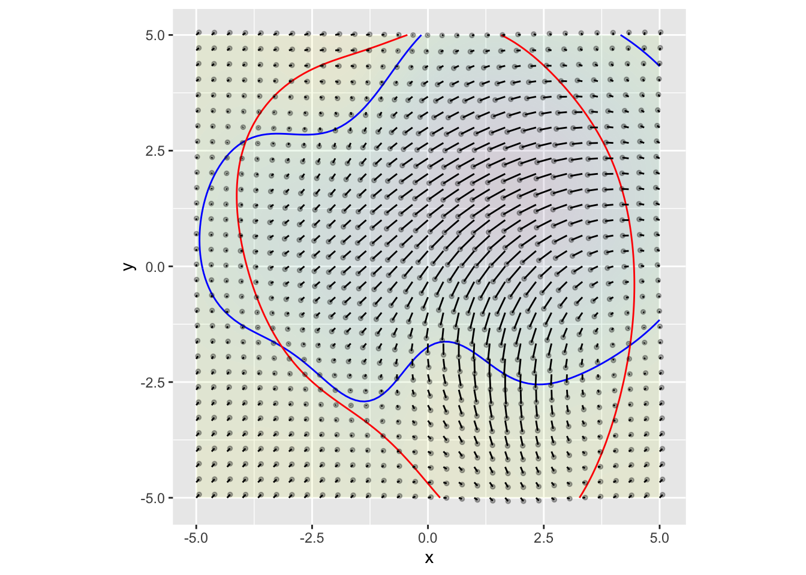
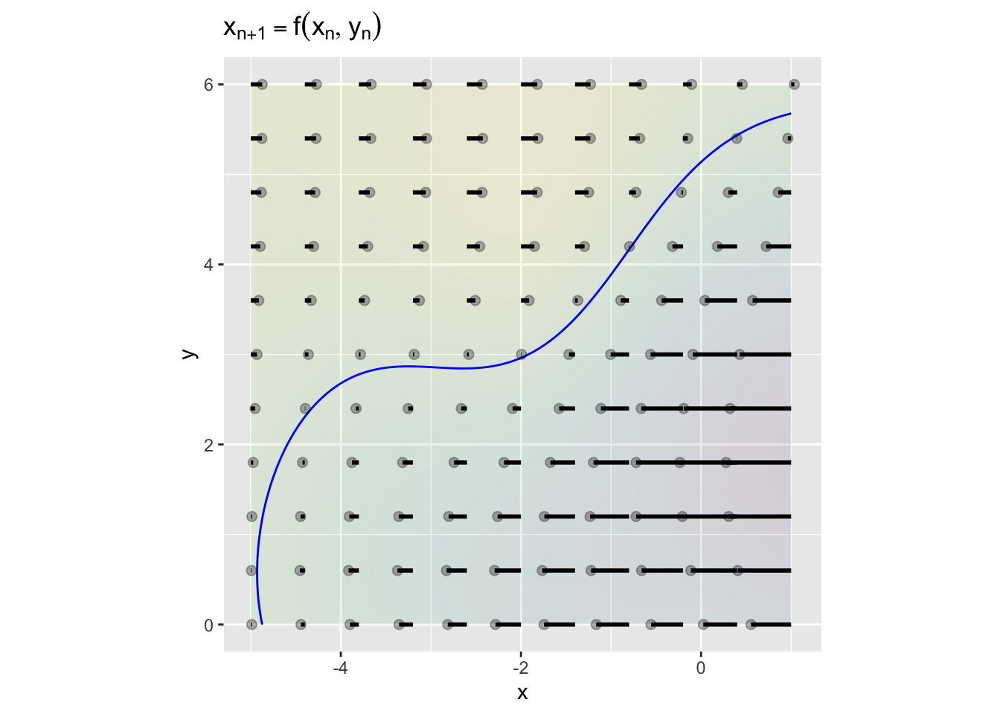
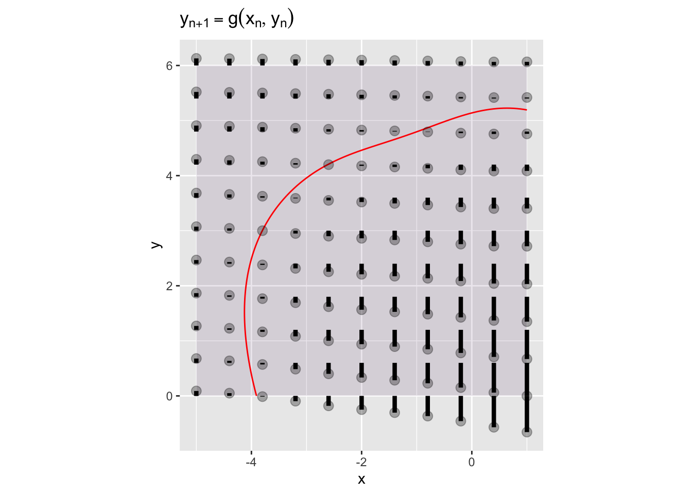
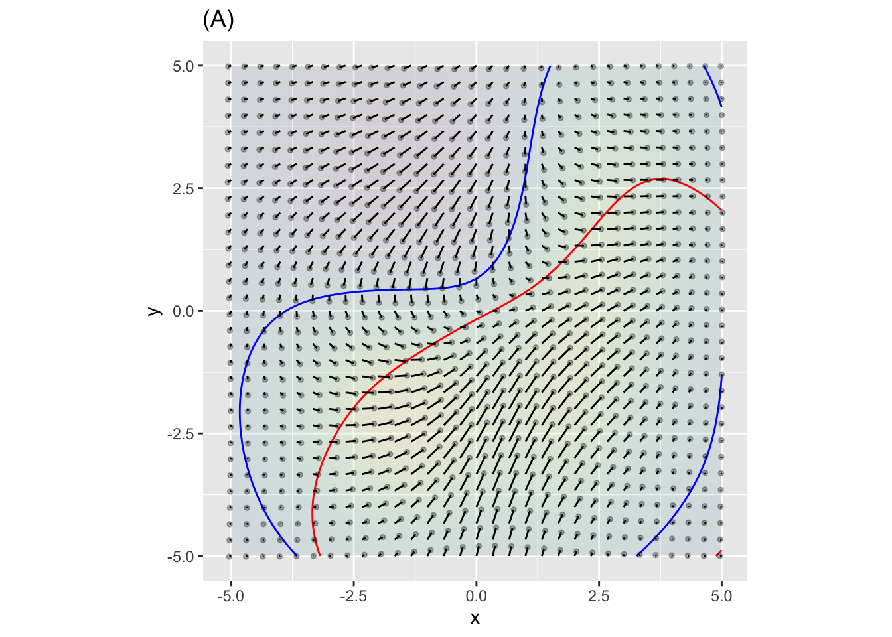
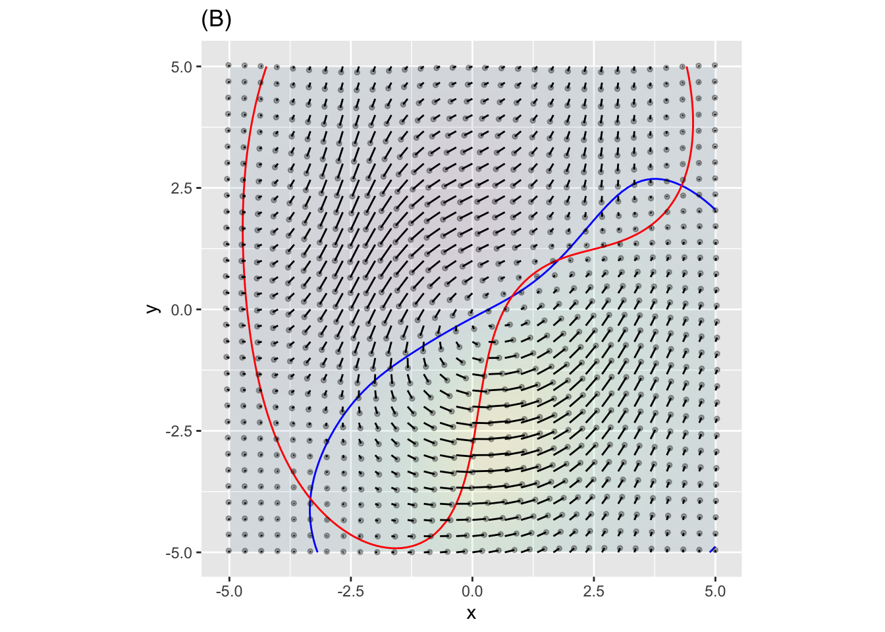
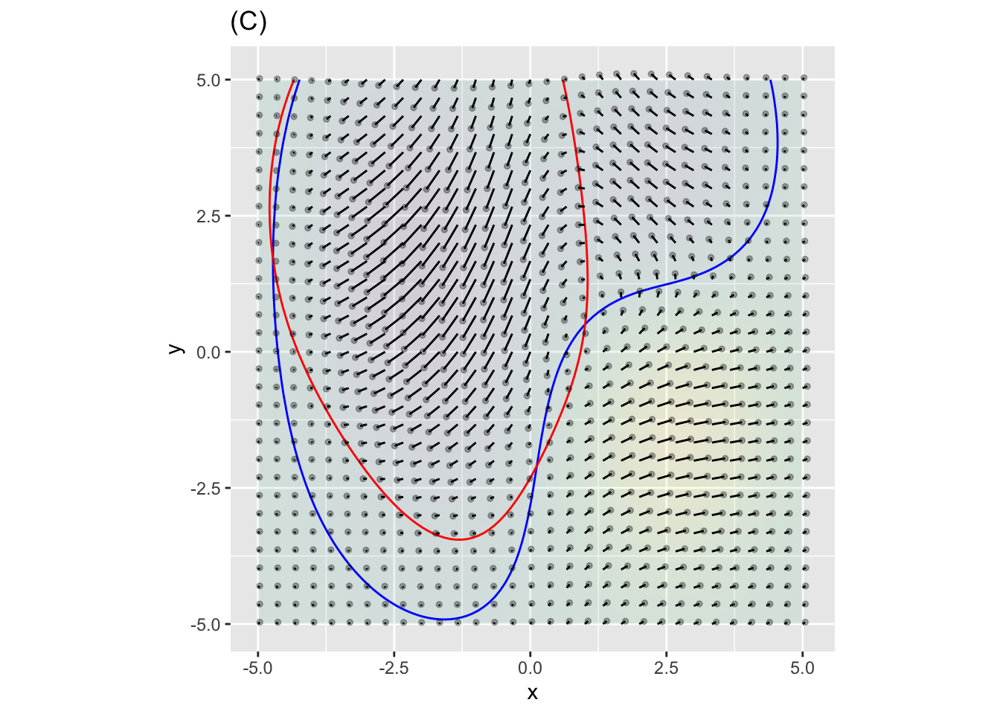
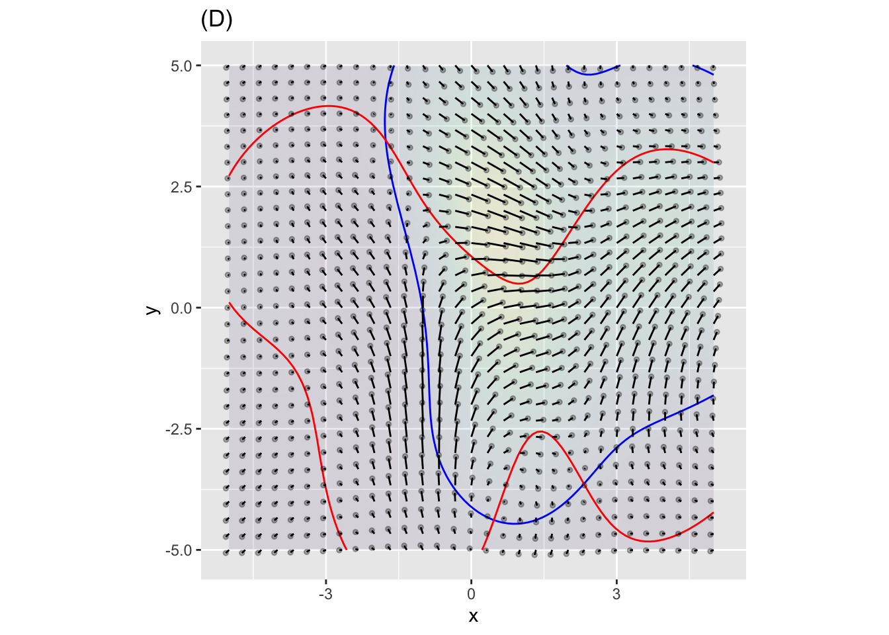

We will be using finite-difference equations mainly for modeling physical processes. It turns out that the way forward is not to make the function \(g(x)\) more complicated in \(x_{n+1} = g(x_n)\) but instead to add more state variables. In this course, we’ll deal with states with two quantities, \((x, y)\), which can be called a two-dimensional state. The systems we will study will involve two dynamical functions, each of which takes both \(x\) and \(y\) as arguments. That is: \[x_{n+1} = f(x_n, y_n)\\ y_{n+1} = g(x_n, y_n)\]
For instance, here is one such system:  The functions \(f(x,y)\) and \(g(x,y)\) are represented by short line segments with a tiny dot at one end. Each line segment connects \((x_n, y_n)\) to \((x_{n+1}, y_{n+1})\), with the dot at the \(n+1\) end.
Consider the line segment that starts at \((0,0)\). The end of the line segment is at about \((-0.101, -0.163)\). (You can’t see such precision from the graph, but the author can!) This is just to say that for the particular \(f()\) and \(g()\) being displayed, \[f(0, 0) = -0.101\ \ \ \mbox{and}\ \ \ g(0,0) = -0.163\] The result of the dynamics is to take a state of \((0,0)\) a bit to the “southwest,” to \((-0.101, -0.163)\). From there you can take the next step, then the one after that, and so on to approximate the trajectory. It’s very much like the state was being blown around in the wind, with the line segments indicating the direction and speed of the wind at any point.
The blue and red contour lines are added to the picture to help the viewer spot fixed points. The blue contour line is the zero contour of \(f(x,y) - x\). Similarly, the red contour line is the zero contour of \(g(x,y) - y\).
The left panel below shows the dynamics of \(x\): that is \(x_{n+1} = f(x_n,y_n)\). The right panel shows the \(y\) dynamics: \(y_{n+1} = g(x_n,y_n)\).

Note that in the x-dynamics plot, we’re only seeing the change in \(x\). That’s why the line segments are all horizontal: they connect \(x_n\) to \(x_{n+1}\). The blue contour shows the points where \(x_{n+1} = x_n\): The line segment is just a dot. For this particular \(f(x,y)\) the segments starting at places to the right of the contour point to the left; the segments starting to the left of the contour point to the right. At the contour, the segments point neither left nor right: they are fixed points with respect to \(x\).
The right panel is similar, but shows the dynamics of \(y\). Since the plot shows only the change in \(y\), the segments are all oriented in the \(y\) direction. For this particular \(g(x,y)\), segments above the contour point upward, segments below the contour point downward, and segments on the contour show no change in \(y\).
The original graph shows both the \(x\) and \(y\) dynamics simultaneously. Where the blue and red contours cross, there is a fixed point in both \(x\) and \(y\). You can see 3 such fixed points (with a fourth suggested near the top of the graph).



